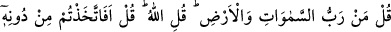
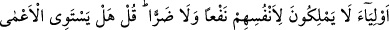
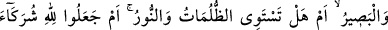
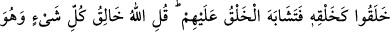
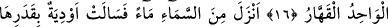
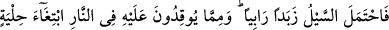
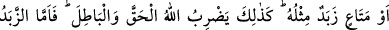
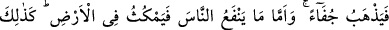
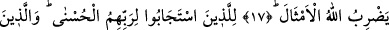
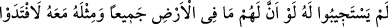
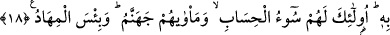

GÖKLERİN VE YERİN RABBİ
16. (Rasûlüm!) De ki: “Göklerin ve yerin Rabbi kimdir?” De ki: “Allah’tır.” O
halde de ki: “O’nu bırakıp da kendilerine fayda ya da zarar veremeyen dostlar mı
edindiniz?” De ki: “Körle gören bir olur mu hiç? Ya da karanlıklarla aydınlık eşit
olur mu?” Yoksa O’nun yarattığı gibi yaratan ortaklar buldular da bu yaratma
onlarca birbirine benzer mi göründü? De ki: “Allah her şeyi yaratandır. Ve O birdir,
karşı durulamaz güç sahibidir.”
17. O, gökten su indirdi de vâdiler kendi ölçülerince sel olup aktı. Bu sel, üste
çıkan bir köpüğü yüklenip götürdü. Süs veya (diğer) eşya yapmak için ateşte
erittikleri şeylerden de buna benzer köpük olur. İşte Allah hak ile bâtıla böyle misal
verir. Köpük atılıp gider. İnsanlara fayda veren şeye gelince, o yeryüzünde kalır.
İşte Allah böyle misaller getirir.
18. İşte Rablerinin emrine uyanlar için en güzel (mükâfat) vardır. Ona
uymayanlara gelince, eğer yeryüzünde olanların tümü ile bunun yanında bir misli
daha kendilerinin olsa, (kurtulmak için) onu mutlaka feda ederlerdi. İşte hesabın
en kötüsü onlaradır. Varacakları yer de cehennemdir. O ne kötü yataktır!
Ey Muhammed! Müşriklere “de ki: “Göklerin ve yerin Rabbi” yaratıcısı, sahibi ve
işlerini düzenleyen “kimdir?” Cevap olarak “de ki Allah’tır.” Çünkü O, tartışma